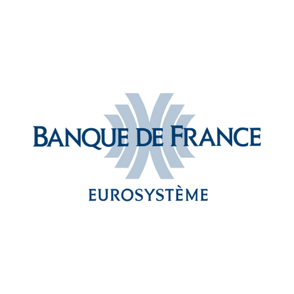

Research internship focused on social robotics and real-time AI systems.
Key achievements:
• Developed real-time gesture-based interaction with the NAO social robot.
• Built a conversational assistant with the Reachy robot, optimizing response times,
dialogue flow, and human-in-the-loop interruption handling.
• Designed a Robot–Robot Interaction (RRI) loop enabling NAO and Reachy to interact.
work expected to lead to two scientific publications.
NTNU — Intern Researcher
Jun 2025 – Aug 2025 · 3 months
Gjøvik, Norway · EduTech Lab
GROUPE COMAT — OCR Project (Intelligent Document Processing)
Jan 2025 – May 2025 · 5 months
Angers, France · Hybrid
Designed an OCR pipeline (Python, doctr, OpenCV) using CNNs to extract handwritten
specifications
from 2D sketches and convert them into structured digital data.
Banque de France - Data Engineer Junior
Internship 2024 - 3 months
Poitiers, France
During my internship at the Banque de France, I integrated web scraping
techniques using Python scripts to retrieve relevant data, particularly from platforms
utilizing ElasticSearch. This enabled the processing of large data volumes, essential for
feeding AI models like those used in Retrieval Augmented Generation (RAG). Additionally, I
explored NLP applications, including automatic speech recognition (ASR) for converting
speech to text and optical character recognition (OCR) for text recognition. These efforts
significantly enhanced the analytical capabilities and efficiency of automated processes
within the organization. My primary automation tool was Selenium.


Via Electro - Electronic Technician
Summer Job 2023
Marseille, France
Installed and maintained electronic security, access control, image and sound systems for major clients and large-scale projects. Managed network and computer rack systems.
GRDF - France’s leading natural gas distribution operator
Internship 2022 - 1 month
Marseille, France
Worked at GRDF in various positions, gaining knowledge of managerial roles and
financial and economic aspects. Learned about asbestos prevention and risks, and the concept
of green gas and its ecological and economic benefits.


JCAQSE - Junior Company
2021/2022
Aix-en-Provence, France
Participated in a professional association integrated into the school.
Responsible for quality management in the Junior Enterprise of the school. Used and managed
processes and KPIs for the continuous improvement of the Junior Enterprise.